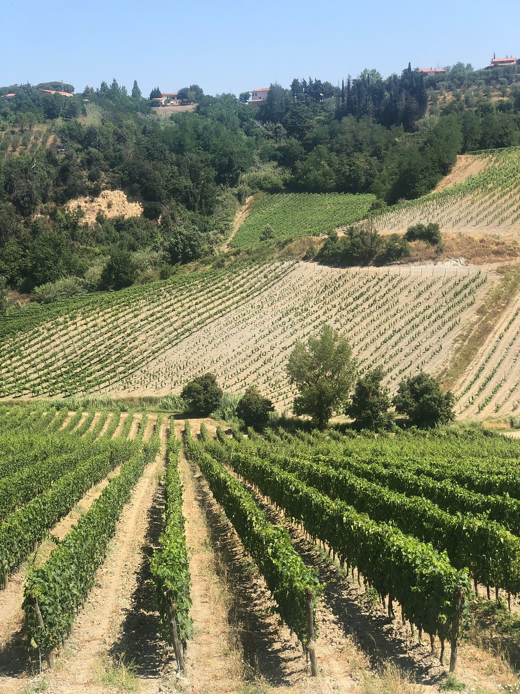

富比朗豪酒庄
酒庄简介：
富比朗豪酒庄的历史可以追溯到中世纪，当时它由贵族家庭Gherardi del Testa Barasaglia拥有。直到18世纪，庄园才延伸到今天的结构和规模。然后，在20世纪，更确切地说是在1997年，来自米兰的Cantoni家族在游览托斯卡卡纳的时候在Terricciola找到了Fattoria di Fibbiano，因此他们认为这是他们的最佳选择。
从那以后，他们对所有这些进行了翻新，并将其变成了ー个成功的酒庄和农业旅游。他们从一开始就采用有机农业方式，但自去年以来，他们才获得官方认证。此外，它们是100％可再生的农场，因此在能源使用方面具有自我可持续性。
